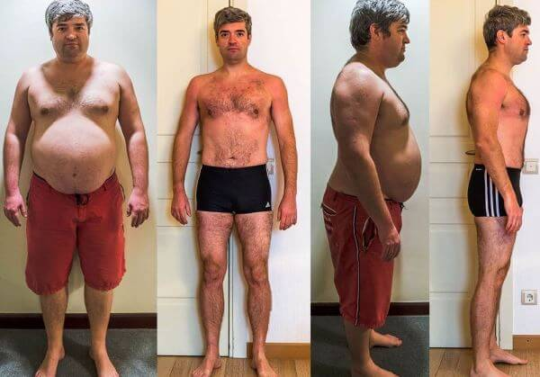
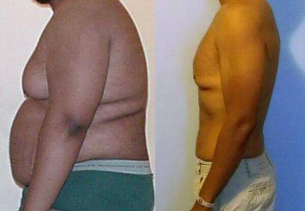

- Pietro
- 115 commenti
- 227 710 visualizzazioni
Come perdere 45 chili senza diete e allenamenti
Questo metodo vi aiuterà a perdere fino a 15 chili a settimana in modo RAPIDO e SICURO
Ciao a tutti! Sono sempre io, Pietro Crescenzi. Sono riuscito a dimagrire grazie ad un metodo praticamente sconosciuto ed è possibile che questo post venga cancellato al più presto. Questo nuovo metodo è una vera e propria svolta nel campo della nutrizione . Molti dietologi stanno disperatamente cercando di nasconderlo, perché pubblicizzarlo sarebbe molto svantaggioso per loro. Ho speso tempo e denaro torturandomi con diete e allenandomi con dei personal trainer, ma non ha funzionato . Ho trovato un'altra soluzione che si è rivelata così semplice e accessibile che era difficile crederci. Ora voglio condividere questo segreto con tutti coloro che hanno problemi di salute e di sovrappeso.
Questa è la mia storia:
Mi è sempre piaciuto mangiare, quindi sono stato grosso sin dall'infanzia. Quello che mi piaceva di più era mangiare cibo spazzatura davanti alla TV dopo il lavoro. Mia moglie non approvava, ma non ha mai protestato apertamente contro quest'abitudine. Tuttavia, dopo aver compiuto 25 anni , il mio corpo ha cominciato a crescere a dismisura, soprattutto nella zona addominale. Non mi sono neanche accorto di come sono arrivato a pesare così tanto. Sembravo un enorme maiale. A 33 anni pesavo 125 kg , ovvero 46 kg in più rispetto al peso normale per la mia altezza.
Inoltre, avevo seri problemi di salute. Sentivo un forte dolore al fianco, proprio in corrispondenza del pancreas. Ho iniziato a soffrire di affaticamento rapido, di sudorazione eccessiva e di difficoltà di respirazione. Ma la cosa più terribile che mi è successa è stata l'impotenza . A dire il vero, la mia pancia era talmente enorme che non riuscivo a vedere la mia virilità da un pezzo, ma quando ha smesso di funzionare del tutto mi sono reso conto che era davvero troppo. L'impotenza ha influito sulla mia vita familiare: io e mia moglie abbiamo iniziato a litigare abbastanza spesso. Non essere in grado di soddisfare la mia donna è stato un durissimo colpo per la mia autostima. Mi odiavo e mi sentivo un fallito.
Mi sono sottoposto ad una visita medica in ospedale e i risultati si sono rivelati abbastanza tristi. Il mio corpo era a grave rischio di diabete : gli anni passati a ingurgitare cibo spazzatura l'avevano messo K.O., in particolare il pancreas.
Così ho cominciato una dieta rigorosa. Quando mangi quello che vuoi da una vita, la dieta può diventare una vera e propria tortura psicologica . Tutte le settimane salivo sulla bilancia sperando che il mio tormento non fosse stato vano, ma la bilancia segnava sempre 125,9 kg . Dopo 3 mesi ho deciso di unire l'esercizio fisico alla dieta e ho cominciato ad andare in palestra. Un allenatore del posto mi ha detto che avrei cominciato a dimagrire solo dopo sei mesi perché, a causa del mio peso, gli esercizi intensi erano troppo pericolosi per me . Quindi facevo solo esercizi semplici come camminare sul tapis roulant, pedalare sulla cyclette, squat e salti. Ma anche fare 10 semplici squat era molto difficile. Ansimavo e mi girava la testa. Le altre persone in palestra ridevano sotto i baffi quando mi guardavano. Come biasimarli, del resto? È piuttosto divertente vedere un ciccione enorme e idiota che ansima e suda facendo esercizi che potrebbe fare facilmente qualsiasi pensionato.
È stato il momento più difficile di tutta la mia vita. Avevo sempre fame. Il cibo me lo sognavo pure di notte. Mi innervosivo e mi irritavo facilmente. Forse mi sarei sentito meglio se avessi avuto un po' di sostegno da parte di mia moglie, ma lei mi odiava. Litigavamo sempre e mi insultava dicendo cose terribili, come "ciccione di m****" , "perdente" e urlandomi "Non mi hai mai soddisfatta" . Era un disastro: neanche mia moglie credeva in me. Poco tempo dopo mi ha lasciato per un altro uomo e ha chiesto il divorzio.
Dopodiché, ho cercato di attenermi alla dieta e di fare esercizi in palestra per un altro mese, ma quando la bilancia mi ha di nuovo mostrato quei terribili 125 kg, ho interrotto la dieta e ho ripreso a mangiare cibo da fast food mandandolo giù con dell'alcol.
In quel momento non volevo vivere quella che non era una vita, ma poi mi è successa una cosa incredibile. Spesso la sera ascoltavo con malinconia le canzoni dei miei cantanti preferiti, soprattutto di Arisa. Un giorno, per puro caso, ho trovato un articolo su come la mia amata Arisa aveva sorpreso l'Italia intera con il suo dimagrimento miracoloso: -19 kg in 30 giorni! Le voci al riguardo si erano diffuse velocemente in tutto il paese, perché questo metodo non richiede né diete, né grandi sforzi fisici: basta semplicemente assumere il prodotto .

Mi era difficile crederci, ma poi ho trovato un sacco di commenti positivi da parte di molte persone che avevano seguito l'esempio di Arisa e perso fino a 35 kg. In particolare, mi è rimasta impressa la frase di una donna che era riuscita a dimagrire con continuando a godersi il sapore del pane tostato croccante con la Nutella al mattino, il gusto di una succulente pizza con salamino piccante e il tiramisù. Con l'aiuto di aveva perso 15,6 kg rassodando la pancia flaccida! Inoltre, sono riuscito a trovare le recensioni di famosi nutrizionisti americani che hanno confermato che è una svolta in dietologia. Il prodotto è 100% naturale ed ecologico, è sicuro per il sistema nervoso e il cuore ed è stato clinicamente testato e approvato dai medici. Questo mi ha infuso fiducia, così ho iniziato a prendere secondo le istruzioni: ne mescolavo 2 cucchiaini in una tazza di acqua bollente e lo bevevo ogni mattina durante la colazione.
I miei risultati:
Dopo una settimana di assunzione di il mio peso non era cambiato, ma ho cominciato a sentirmi molto meglio: avevo un sacco di energia. Dopo 14 giorni , invece, sono rimasto veramente sconvolto. Ero dimagrito di 9,3 kg nonostante avessi mangiato tutto quello che volevo ! Dimagrimento semplice senza restrizioni! È stato sensazionale!
Dopo altri 7 giorni sono riuscito a perdere 8,5 kg in più! Nel giro di 2 mesi e mezzo il grasso si è letteralmente sciolto in modo facile e veloce.
Ogni giorno sentivo un impulso di energia e il fianco ha smesso di farmi male. Mi sono anche liberato dell'impotenza. Dopo che il mio corpo è stato depurato dalle tossine, la mia erezione è diventata più forte e più duratura (in media i rapporti durano 40-60 minuti). Inoltre, sono diventato attraente agli occhi del sesso opposto: le donne hanno cominciato a interessarsi a me ! È stato davvero fantastico! Improvvisamente la mia ex-moglie si è rifatta viva e voleva che tornassimo insieme. Si è scusata a lungo, ma non mi importava più.
Vi spiego brevemente come funziona. La sua formula, attentamente progettata per ottenere i migliori risultati, contiene estratto di tè verde Matcha, taurina, estratto di acido citrico, ingredienti 100% naturali ed ecologici di alta qualità che fanno tutto ciò che serve per ottenere un corpo snello e sano.
- Evitano il pericoloso accumulo di grassi negli organi interni riducendo il rischio di diabete e ipertensione e minimizzando il rischio di infarto. Quindi, si può mangiare quello che si vuole sperimentando i benefici di un metabolismo efficiente ;
- Il grasso pericoloso che si accumula negli organi interni viene espulso dall'organismo ;
- Si ristabilisce l'equilibrio lipidico e la pancia si assottiglia in maniera visibile;
- Si bruciano gli accumuli sui fianchi, la pelle si stira e le pieghe sulla pancia scompaiono.
L'ho verificato personalmente quando i risultati della mia visita medica hanno rivelato che ero assolutamente sano. La promessa del produttore è stata mantenuta. I livelli di zucchero e colesterolo nel sangue erano normali. E mangiavo quello che volevo e quanto ne volevo. Penso che lo facciano tutti gli uomini normali .
Dopo 3 mesi di assunzione di sono riuscito a perdere 45 kg e ora ne peso 79 .
non crea dipendenza. Ho fatto una lunga pausa tra i cicli di trattamento e ho continuato a sentirmi bene. Inoltre, non ho mai recuperato i kg persi. Ora il mio peso è stabile a 79 kg.
Questo è il link del sito ufficiale di per chi vuole dimagrire in modo rapido e facile come me. Prendete e migliorate la vostra salute e la qualità della vostra vita. Il prodotto è molto conveniente rispetto al potente effetto che si ottiene. TENETE PRESENTE che è l'unico sito dove si può ordinare l'originale: gli altri siti vendono prodotti contraffatti e inefficaci fabbricati in Cina. Ci sono molti siti del genere. Quando ho ordinato sul sito ufficiale non ho speso niente! Ho pagato solo quando ho ricevuto il prodotto. Voglio anche aggiungere che la consegna è stata molto veloce: il pacco è arrivato il giorno successivo.
Se avete deciso di provare , vi consiglio di farlo in questo momento, dato che la promozione termina il
ha migliorato immensamente la mia vita. Ora sono contento del mio aspetto, mi sento in buona salute e mi godo le attenzioni femminili. Credo che condividere questa esperienza fosse d'obbligo. Smettete di torturarvi con le diete e prendetevi cura di voi! In bocca al lupo!
Grazie per l'attenzione. :-) Cari saluti, Pietro


Commenti
Oh, io adoro le canzoni di Arisa! Infatti, ha recentemente perso tanti chili e ora è semplicemente stupenda!
Stavo proprio cercando informazioni su . Grazie per il feedback dettagliato!
E' proprio cosi'! Ho provato questo prodotto un anno fa e ho perso 19 kg in un mese ! Ogni giorno diventavo piu' snella! E' passato un anno da allora e il mio peso e' stabile. E' fermo a 49 kg !
Ho un grande rispetto per Arisa perche ha condiviso questo metodo cosi efficace per dimagrire. E anche tu sei bravissimo! I risultati sono sorprendenti.
Uso da tanto perché so quanto sia efficace. Prima avevo comprato un falso che non ha dato nessun risultato. Il prodotto autentico si può ordinare solo qui e ad un prezzo bassissimo . Funziona perfettamente! Ci si sente alla grande e le erezione sono dure come il marmo e durano a lungo. Inoltre, ho perso 26 chili. Un bonus non da poco!
Non potrei essere piu daccordo! funziona davvero! Ho lottato a lungo per liberarmi del grasso addominale. Sono andato in palestra per 3 mesi senza alcun risultato. Poi mia moglie ha ordinato per me e il grasso addominale è scomparso letteralmente in un mese!
L'erezione diventa certamente più forte quando tutte le tossine vengono eliminate dal corpo.
Qualcuno l'ha già ordinato? Quanto ci vuole per la consegna?
Io l'ho ordinato sul sito ufficiale . La consegna è stata rapida, ci sono voluti solo 2 giorni . Il mio allenatore mi ha consigliato di prenderlo. I risultati sono impressionanti! Ho perso 31 kg in 2 mesi e mezzo .
Sì, tutta Italia è realmente impazzita per questo metodo! Tutti i miei amici prendono e dimagriscono
Ho visto un programma TV con il dr. Oz e altri medici famosi che parlavano di questo prodotto. Dicevano che nel 98% dei casi il sovrappeso è causato da disturbi endocrini, glicemia, elevati livelli di colesterolo nel sangue e intensità del metabolismo . Perciò pare che le storie che descrivono l'efficacia di siano credibili.